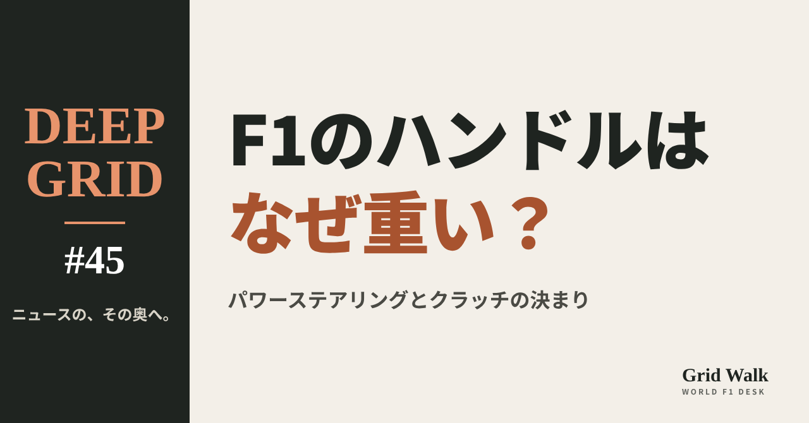
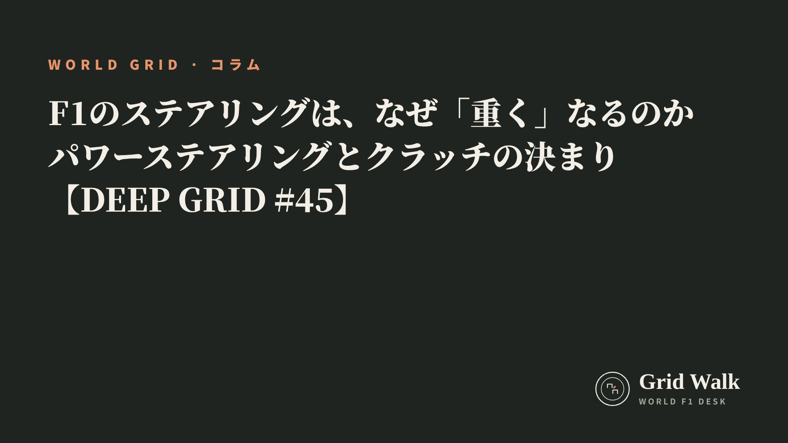

<meta charset="utf-8"><title>DEEP GRID #45 note貼り付け</title>
<style>
/* one column of numbered paste steps; text steps vs image steps differ by marker */
:root{--bg:#F5F4F0;--card:#FFFFFF;--ink:#1D2321;--mute:#5F665F;--line:#DCDAD2;--btn:#1F5FBF;--btnok:#2E8B4F;--img:#E9F3EC;--imgink:#22663B;--sans:'IBM Plex Sans JP','Hiragino Sans','Noto Sans JP',sans-serif}
@media (prefers-color-scheme:dark){:root:not([data-theme="light"]){--bg:#171A19;--card:#202423;--ink:#ECEDE8;--mute:#A3AAA2;--line:#343937;--btn:#4D8BE6;--btnok:#3FA866;--img:#1E2C23;--imgink:#8FD3A6;color-scheme:dark}}
:root[data-theme="dark"]{--bg:#171A19;--card:#202423;--ink:#ECEDE8;--mute:#A3AAA2;--line:#343937;--btn:#4D8BE6;--btnok:#3FA866;--img:#1E2C23;--imgink:#8FD3A6;color-scheme:dark}
body{background:var(--bg);color:var(--ink);font-family:var(--sans);font-size:15px;line-height:1.75;padding:20px 16px 60px}
main{max-width:680px;margin:0 auto;display:grid;gap:28px}
header h1{font-size:22px;margin:0 0 6px;text-wrap:balance}
header p{margin:0;color:var(--mute);font-size:14px}
nav{display:flex;gap:8px;flex-wrap:wrap;margin-top:12px}
nav a{border:1px solid var(--line);border-radius:999px;padding:4px 14px;color:var(--ink);text-decoration:none;font-size:14px;background:var(--card)}
.part h2{font-size:18px;line-height:1.5;margin:0 0 12px;text-wrap:balance;display:flex;gap:10px;align-items:baseline;flex-wrap:wrap}
.tag{font-size:13px;background:var(--ink);color:var(--bg);border-radius:6px;padding:1px 9px}
.steps{list-style:none;margin:0;padding:0;display:grid;gap:12px}
.st{background:var(--card);border:1px solid var(--line);border-radius:12px;padding:12px;min-width:0}
.hd{display:flex;align-items:center;gap:8px;margin-bottom:8px}
.no{width:26px;height:26px;border-radius:50%;background:var(--btn);color:#fff;display:inline-flex;align-items:center;justify-content:center;font-size:13px;font-weight:700;flex:0 0 26px}
.im .no{background:var(--btnok)}
.hd em{font-style:normal;font-size:12px;background:var(--img);color:var(--imgink);border-radius:6px;padding:0 8px}
.bx{font-size:13.5px;line-height:1.7;border:1px solid var(--line);border-radius:8px;padding:8px 10px;max-height:110px;overflow:auto;overflow-wrap:anywhere}
.bx.tall{max-height:150px}.bx p{margin:0 0 6px}.bx h2{font-size:14px;margin:8px 0 4px}.bx a{color:var(--btn)}
.st img{display:block;width:100%;max-width:100%;border:1px solid var(--line);border-radius:8px}
.sub{font-size:12.5px;color:var(--mute);margin:6px 0 0}
.cp{width:100%;margin-top:8px;padding:12px;border:0;border-radius:10px;background:var(--btn);color:#fff;font:600 15px var(--sans);cursor:pointer}
.cp.ok{background:var(--btnok)}.cp.dl{background:var(--btnok)}.cp:focus-visible{outline:3px solid var(--ink);outline-offset:2px}
.xh{font-size:15px;margin:20px 0 10px}
.fb{font-size:13px;line-height:1.7;margin:8px 0 0;padding:8px 10px;border-radius:8px;background:var(--img);color:var(--imgink)}
.opts{display:grid;grid-template-columns:repeat(auto-fill,minmax(240px,1fr));gap:10px}
.opt{min-width:0}.opt img{display:block;width:100%;border:1px solid var(--line);border-radius:8px}
.ol{display:flex;align-items:center;gap:8px;margin-top:6px}.ol b{font-size:13px;flex:0 0 auto}.ol .on{font-size:12.5px;color:var(--mute);flex:1;min-width:0}.ol .cp{width:auto;flex:0 0 auto;padding:9px 14px}.ol .cp{margin:0;padding:9px}
.toast{font-size:13px;color:var(--mute);margin-top:6px}
</style>
<main><header><h1>DEEP GRID #45 note貼り付け</h1><p>1本あります。青い番号は文章、緑は画像です。</p><nav><a href="#p1">#45</a></nav></header><section class="part" id="p1"><h2><span class="tag">DEEP GRID #45</span>F1のステアリングは、なぜ「重く」なるのか　パワーステアリングとクラッチの決まり【DEEP GRID #45】</h2><ol class="steps">
<li class="st im"><div class="hd"><span class="no">1</span><b>見出し画像</b><em>画像</em></div><button class="cp dl" data-img="img/power-steering-heavy.png" data-name="deep-power-steering-heavy_見出し画像.png">ダウンロード</button></li>
<li class="st"><div class="hd"><span class="no">2</span><b>タイトル</b></div><div class="bx" id="p1t">F1のステアリングは、なぜ「重く」なるのか　パワーステアリングとクラッチの決まり【DEEP GRID #45】</div><button class="cp" data-plain="p1t">タイトルをコピー</button></li>
<li class="st"><div class="hd"><span class="no">3</span><b>本文</b></div><div class="bx tall" id="p1r"><p>サンパウロGPの金曜、フェルスタッペンは重いステアリングを「workout」と言い、シフトダウンにも不満を言った。F1の車のステアリングは量産車よりはるかに重く、パワーステアリングが欠かせない。ところが、その助け方には厳しい決まりがある。電気も電子制御も使えず、ギアの変速もクラッチも、ドライバーの操作が基本だ。2026年の技術規則の条文、過去の故障の例、ドライバーの好みから、「重さ」の正体を読む。</p><p>データの表と、出典13件はサイトで → <a href="https://f1gridwalk.github.io/deep/power-steering-heavy/?utm_source=note&amp;utm_campaign=power-steering-heavy">https://f1gridwalk.github.io/deep/power-steering-heavy/?utm_source=note&amp;utm_campaign=power-steering-heavy</a></p><h2>先に結論</h2><p>① F1のステアリングは、人の力だけでは重すぎる。ホンダの技術論文（2002年）によると、当時のF1で、ステアリングを切る力は最大で350N以上、量産車の5〜10倍にあたった。パワーステアリングは、その力を減らすためにある。</p><p>② 規則は、パワーステアリングに電子制御も電気の動力も禁じ、「ステアリングを切る力を減らす」以外の働きを認めていない（技術規則 C10.5.3）。電子制御が使えないので、ソフトウェアで助け方を変えることはできない。</p><p>③ 軽ければいい、というものでもない。ホンダは、軽すぎると車の操縦性が悪くなると書いている。2011年のトゥルーリは、手応えのなさを「目隠しで運転しているよう」と嘆いた。好みはドライバーごとに違い、合わせるのに何戦もかかることがある。</p><p>④ 油圧が落ちると、ステアリングは重くなる。2019年フランスGPのノリスは、油圧の低下でステアリングが重くなり、変速も悪くなった。油圧は、ステアリングのほかにクラッチや変速、デフなども動かしているからだ（F1公式）。</p><p>⑤ 変速とクラッチにも、細かい決まりがある。自動変速は禁止で、変速は1回ずつドライバーが始め、シフトダウンは300ミリ秒以内に終える（C9.8）。クラッチは、ステアリングに付けた最大2枚のパドルでしか操作できない（C9.2）。2026年は、ラッセルによると、電気をためているときに直線でシフトダウンすることもある。</p><p><strong>F1のステアリングは、どれくらい重いと思いますか？</strong></p><h2>続きは F1 Grid Walk で</h2><p>ここから先の「「重い」は、どこから来るのか」「規則は、パワーステアリングに何を許しているのか」「軽ければいい、わけではない」「壊れたら、どうなるのか」「ステアリングの裏のパドル：クラッチと変速の決まり」は、サイトで読めます。2026年技術規則の、ステアリングとクラッチ・変速の条文、パワーステアリングにまつわる主な出来事、ホンダの電動パワーステアリングの数字（2002年の論文）、ステアリングの移り変わりの表も載せています。</p><p><strong>DEEP GRID #45「F1のステアリングは、なぜ「重く」なるのか　パワーステアリングとクラッチの決まり」</strong></p><p><a href="https://f1gridwalk.github.io/deep/power-steering-heavy/">https://f1gridwalk.github.io/deep/power-steering-heavy/</a></p><p>━━━━━━━━━━</p><p><strong>F1 Grid Walk では、世界のF1ニュースを毎日日本語でまとめています。</strong></p><p>海外の記事の要約を、毎日載せています。</p><p>ほかの海外記事も読みたい方は、F1 Grid Walkへ。</p><p><a href="https://f1gridwalk.github.io/">https://f1gridwalk.github.io/</a></p><p>━━━━━━━━━━</p><p><a href="https://www.fia.com/system/files/documents/fia_2026_f1_regulations_-_section_c_technical_-_iss_21_-_2026-10-19.pdf">出典：FIA</a></p><p><a href="https://global.honda/jp/technical-review/PDF/014-2/014-2_45.pdf">出典：Honda R&amp;D Technical Review</a></p><p><a href="https://www.motorsport.com/f1/news/explained-whats-behind-ferrari-f1s-mysterious-high-speed-handling-anomaly/10740562/">出典：Motorsport.com</a></p><p><a href="https://www.autosport.com/f1/news/152802/no-safety-concerns-with-hamilton-loose-steering">出典：Autosport</a></p><p><a href="https://www.autosport.com/f1/news/92509/trulli-frustrated-by-steering-issues">出典：Autosport</a></p><p><a href="https://www.autosport.com/f1/news/95065/trulli-forced-to-use-old-power-steering">出典：Autosport</a></p><p><a href="https://f1technical.net/news/17169">出典：F1technical.net</a></p><p><a href="https://www.autosport.com/f1/news/98240/raikkonen-seeks-steering-improvements">出典：Autosport</a></p><p><a href="https://www.autosport.com/f1/news/59045/bmw-to-debut-power-steering-system">出典：Autosport</a></p><p><a href="https://www.formula1.com/en/latest/article/jolyon-palmers-analysis-how-lando-norris-managed-a-car-with-hydraulic.229dYZv6iIkprNjbVcszGl">出典：Formula1.com</a></p><p><a href="https://motorsportweek.com/2023/08/27/power-steering-failure-triggered-sargeants-accident/">出典：Motorsport Week</a></p><p><a href="https://www.autosport.com/f1/news/f1-steering-wheels-how-they-work-what-the-buttons-do-and-more/10556327/">出典：Autosport</a></p><p><a href="https://www.autosport.com/f1/news/how-fears-on-f1s-new-rules-have-been-soothed-despite-downshifting-on-straights-and-lift-and-coast/10794739/">出典：Autosport</a></p></div><button class="cp" data-rich="p1r">本文をコピー</button></li>
<li class="st"><div class="hd"><span class="no">4</span><b>ハッシュタグ</b></div><div class="bx" id="p1h">#F1 #F1jp #パワーステアリング #ステアリング #F1のルール #フェルスタッペン #技術規則 #DEEPGRID</div><button class="cp" data-plain="p1h">タグをコピー</button></li>
</ol><h3 class="xh">X</h3><ol class="steps">
<li class="st im"><div class="hd"><b>X用の画像</b><em>画像</em></div><button class="cp dl" data-img="img/x_power-steering-heavy.png" data-name="x_deep-power-steering-heavy.png">ダウンロード</button></li>
<li class="st"><div class="hd"><b>① noteをシェアするときの文</b></div><div class="bx" id="p1x0">F1のパワーステアリングは、電気も電子制御も使えません。規則が認めるのは「切る力を減らす」働きだけ。ステアリングが重くなるわけと、変速・クラッチの決まりを条文から読みました。DEEP GRID #45 #F1jp</div><button class="cp" data-plain="p1x0">コピー</button></li>
<li class="st"><div class="hd"><b>② ①への返信</b></div><div class="bx" id="p1x1">ほかの海外記事も読みたい方は、F1 Grid Walkへ。
https://f1gridwalk.github.io/deep/power-steering-heavy/?utm_source=x&amp;utm_campaign=power-steering-heavy</div><button class="cp" data-plain="p1x1">コピー</button></li>
<li class="st"><div class="hd"><b>③ ②への返信</b></div><div class="bx" id="p1x2">毎日の海外F1ニュースは、日本語でこちらにまとめています。
https://f1gridwalk.github.io/</div><button class="cp" data-plain="p1x2">コピー</button></li>
</ol></section></main><script>
function done(b,msg){const t=b.dataset.t||b.textContent;b.dataset.t=t;b.classList.add('ok');b.textContent=msg||'コピーしました';setTimeout(()=>{b.classList.remove('ok');b.textContent=t},2000)}
function selectEl(el){const r=document.createRange();r.selectNodeContents(el);const s=getSelection();s.removeAllRanges();s.addRange(r)}
async function rich(el,b){
  try{await navigator.clipboard.write([new ClipboardItem({'text/html':new Blob([el.innerHTML],{type:'text/html'}),'text/plain':new Blob([el.innerText],{type:'text/plain'})})]);done(b);return}catch(e){}
  selectEl(el);let ok=false;try{ok=document.execCommand('copy')}catch(e){}
  if(ok){getSelection().removeAllRanges();done(b)}else{done(b,'選択しました。コピーしてください')}}
async function plain(el,b){
  try{await navigator.clipboard.writeText(el.innerText);done(b);return}catch(e){}
  selectEl(el);let ok=false;try{ok=document.execCommand('copy')}catch(e){}
  if(ok){getSelection().removeAllRanges();done(b)}else{done(b,'選択しました。コピーしてください')}}
let dlns=null;(async()=>{try{dlns=await window.claude?.use?.("downloads")}catch(e){dlns=null}})();
async function img(src,b){
  b.dataset.t=b.dataset.t||b.textContent;
  if(!dlns){try{dlns=await window.claude?.use?.("downloads")}catch(e){}}
  if(!dlns){b.textContent='ダウンロードできませんでした';setTimeout(()=>{b.textContent=b.dataset.t},3500);return}
  try{const blob=await fetch(src).then(r=>r.blob());b.textContent='保存の確認を開いています…';
    await dlns.save({filename:b.dataset.name,data:blob});done(b,'ダウンロードしました')}
  catch(e){const c=e&&e.code;b.textContent=c==='declined'?'キャンセルしました':c==='rate_limited'?'少し待ってからもう一度押してください':'ダウンロードできませんでした';setTimeout(()=>{b.textContent=b.dataset.t},3500)}}
document.querySelectorAll('.cp').forEach(b=>b.addEventListener('click',()=>{
  if(b.dataset.rich)rich(document.getElementById(b.dataset.rich),b);
  else if(b.dataset.plain)plain(document.getElementById(b.dataset.plain),b);
  else img(b.dataset.img,b)}));
</script>